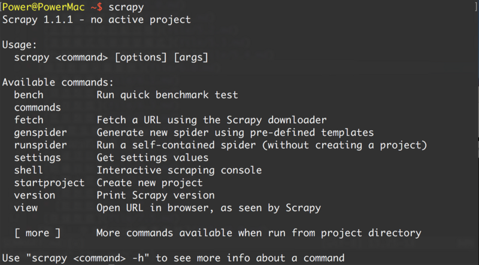
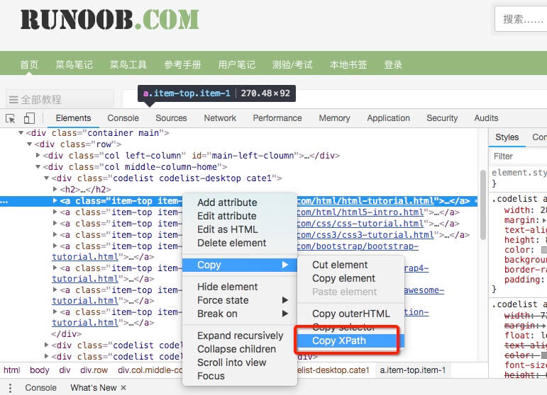
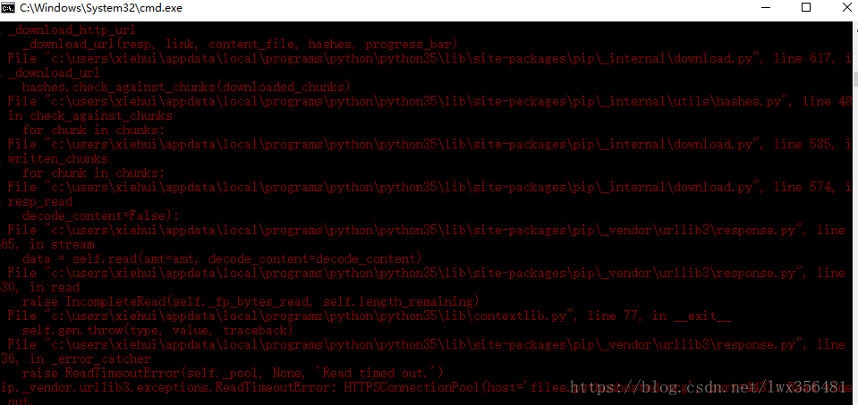
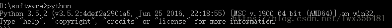
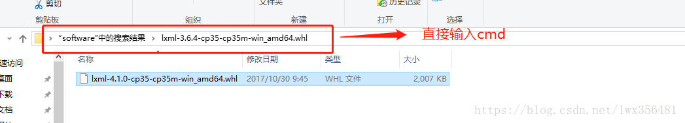
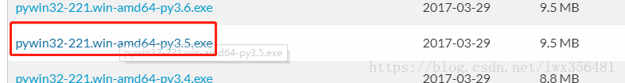

Scrapy es un marco de aplicación escrito en Python para rastrear datos de sitios web y extraer datos estructurados.
Scrapy se usa a menudo en una serie de programas que incluyen minería de datos, procesamiento de información o almacenamiento de datos históricos.
Por lo general, podemos implementar fácilmente un rastreador con el marco Scrapy para extraer contenido o imágenes de sitios web específicos.
Diagrama de arquitectura de Scrapy (las líneas verdes son el flujo de datos)

-
Scrapy Engine (motor): Se encarga de la comunicación entre Spider, ItemPipeline, Downloader y Scheduler, así como de señales, transmisión de datos, etc.
-
Scheduler (planificador): Se encarga de recibir las solicitudes Request enviadas por el motor, organizarlas y ponerlas en cola de cierta manera, y devolverlas al motor cuando este las necesite.
-
Downloader (descargador): Se encarga de descargar todas las solicitudes Requests enviadas por Scrapy Engine (motor) y devolver las Responses obtenidas a Scrapy Engine (motor), que a su vez las entrega a Spider para que las procese.
-
Spider (rastreador): Se encarga de procesar todas las Responses, analizar y extraer datos de ellas, obtener los datos necesarios para los campos de Item, y enviar las URL que requieren seguimiento al motor para que vuelvan a entrar en Scheduler (planificador).
-
Item Pipeline (tubería): Es el lugar encargado de procesar los Items obtenidos por Spider y realizar el postprocesamiento (análisis detallado, filtrado, almacenamiento, etc.).
-
Downloader Middlewares (middlewares de descarga): Puedes considerarlo como un componente que permite personalizar y ampliar la funcionalidad de descarga.
-
Spider Middlewares (middlewares de Spider): Puedes entenderlo como un componente funcional que permite personalizar y ampliar la comunicación entre el motor y Spider (por ejemplo, las Responses que entran a Spider y las Requests que salen de Spider).
Flujo de funcionamiento de Scrapy
Una vez escrito el código, el programa comienza a ejecutarse...
- 1. Motor: ¡Hola! Spider, ¿qué sitio web vas a procesar?
- 2. Spider: El jefe quiere que procese xxxx.com.
- 3. Motor: Dame la primera URL que necesitas procesar.
- 4. Spider: Aquí tienes, la primera URL es xxxxxxx.com.
- 5. Motor: ¡Hola! Planificador, tengo una solicitud request, ayúdame a ordenarla y ponerla en cola.
- 6. Planificador: De acuerdo, la estoy procesando, espera un momento.
- 7. Motor: ¡Hola! Planificador, dame la solicitud request que ya procesaste.
- 8. Planificador: Aquí tienes, esta es la request que procesé.
- 9. Motor: ¡Hola! Descargador, descarga esta solicitud request según la configuración del middleware de descarga del jefe.
- 10. Descargador: ¡De acuerdo! Aquí tienes, esto es lo descargado. (Si falla: lo siento, esta request no se pudo descargar. Luego el motor le dice al planificador: esta request falló, regístrala, la descargaremos más tarde).
- 11. Motor: ¡Hola! Spider, esto es lo descargado y ya ha sido procesado según el middleware de descarga del jefe, procésalo tú mismo (¡nota! aquí las responses se entregan por defecto a la función def parse()).
- 12. Spider: (Después de procesar los datos, sobre las URL que requieren seguimiento) ¡Hola! Motor, tengo dos resultados aquí: esta es la URL que necesito seguir, y este es el dato Item que obtuve.
- 13. Motor: ¡Hola! Tubería, tengo un item aquí, ayúdame a procesarlo. ¡Planificador! Esta es la URL que requiere seguimiento, ayúdame a procesarla. Luego se repite el ciclo desde el paso 4 hasta obtener toda la información que el jefe necesita.
- 14. Tubería/Planificador: ¡De acuerdo, lo hago ahora mismo!
¡Nota! Solo cuando no exista ninguna request en el planificador, todo el programa se detendrá (es decir, Scrapy también volverá a descargar las URL que fallaron en la descarga).
Para hacer un rastreador con Scrapy se necesitan 4 pasos en total:
- Crear un nuevo proyecto (scrapy startproject xxx): crear un nuevo proyecto de rastreador.
- Definir los objetivos (escribir items.py): aclarar qué objetivos quieres extraer.
- Crear el rastreador (spiders/xxspider.py): crear el rastreador para comenzar a rastrear páginas web.
- Almacenar contenido (pipelines.py): diseñar la tubería para almacenar el contenido rastreado.
Instalación
Instalación en Windows
Actualizar la versión de pip:
pip install --upgrade pip
Instalar el marco Scrapy mediante pip:
pip install Scrapy
Instalación en Ubuntu
Instalar las dependencias que no son de Python:
sudo apt-get install python-dev python-pip libxml2-dev libxslt1-dev zlib1g-dev libffi-dev libssl-dev
Instalar el marco Scrapy mediante pip:
sudo pip install scrapy
Instalación en Mac OS
En el caso de Mac OS, como el sistema hace referencia a las bibliotecas de python2.x que vienen incluidas, los paquetes instalados por defecto no se pueden eliminar. Pero si usas python2.x para instalar Scrapy dará error, y con python3.x también dará error. Finalmente no encontré una forma de instalar Scrapy directamente, así que usaré otro método de instalación para explicar los pasos. La solución es usar virtualenv para instalar.
$ sudo pip install virtualenv $ virtualenv scrapyenv $ cd scrapyenv $ source bin/activate $ pip install Scrapy
Después de la instalación, simplemente escribe scrapy en la terminal de comandos. Si aparece un resultado similar al siguiente, significa que la instalación fue exitosa.

Caso de introducción
Objetivos de aprendizaje
- Crear un proyecto de Scrapy
- Definir los datos estructurados (Item) a extraer
- Escribir un Spider para rastrear el sitio web y extraer los datos estructurados (Item)
- Escribir Item Pipelines para almacenar los Items extraídos (es decir, los datos estructurados)
1. Crear un nuevo proyecto (scrapy startproject)
Antes de comenzar a rastrear, debes crear un nuevo proyecto de Scrapy. Entra en el directorio del proyecto personalizado y ejecuta el siguiente comando:
scrapy startproject mySpider
Aquí, mySpider es el nombre del proyecto. Puedes ver que se creará una carpeta mySpider, cuya estructura de directorios es aproximadamente la siguiente:
A continuación, se presenta brevemente la función de cada archivo principal:
mySpider/
scrapy.cfg
mySpider/
__init__.py
items.py
pipelines.py
settings.py
spiders/
__init__.py
...
Estos archivos son:
- scrapy.cfg: el archivo de configuración del proyecto.
- mySpider/: el módulo de Python del proyecto, desde donde se hará referencia al código.
- mySpider/items.py: el archivo de objetivos del proyecto.
- mySpider/pipelines.py: el archivo de tuberías del proyecto.
- mySpider/settings.py: el archivo de configuración del proyecto.
- mySpider/spiders/: el directorio donde se almacena el código del rastreador.
2. Definir los objetivos (mySpider/items.py)
Tenemos la intención de extraerhttp://www.itcast.cn/channel/teacher.shtmllos nombres, títulos profesionales e información personal de todos los instructores del sitio web.
Abre el archivo items.py en el directorio mySpider.
Item define campos de datos estructurados, que se utilizan para guardar los datos extraídos. Es un poco como un dict en Python, pero proporciona protecciones adicionales para reducir errores.
Puedes definir un Item creando una clase scrapy.Item y definiendo atributos de clase de tipo scrapy.Field (puede entenderse como una relación de mapeo similar a un ORM).
A continuación, crea una clase ItcastItem y construye el modelo (model) del item.
import scrapy class ItcastItem(scrapy.Item): name = scrapy.Field() title = scrapy.Field() info = scrapy.Field()
3. Crear el rastreador (spiders/itcastSpider.py)
La funcionalidad del rastreador se divide en dos pasos:
1. Rastrear los datos
Al ingresar el comando en el directorio actual, se creará un crawler llamado itcast en el directorio mySpider/spider, y se especificará el alcance del dominio de rastreo:
scrapy genspider itcast "itcast.cn"
Abrir itcast.py en el directorio mySpider/spider; por defecto se agrega el siguiente código:
import scrapy
class ItcastSpider(scrapy.Spider):
name = "itcast"
allowed_domains = ["itcast.cn"]
start_urls = (
'http://www.itcast.cn/',
)
def parse(self, response):
pass
En realidad, también podemos crear itcast.py nosotros mismos y escribir el código anterior, pero usar el comando nos evita la molestia de escribir el código fijo.
Para crear un Spider, debes crear una subclase usando la clase scrapy.Spider, y definir tres atributos obligatorios y un método.
name = "": Este es el nombre identificador del crawler; debe ser único. Diferentes crawlers deben tener nombres diferentes.
allow_domains = [] es el rango de dominios de búsqueda, es decir, el área restringida del crawler; especifica que el crawler solo rastrea páginas bajo este dominio, y las URLs inexistentes serán ignoradas.
start_urls = (): tupla/lista de URLs a rastrear. El crawler comienza a extraer datos desde aquí, por lo que los primeros datos descargados comenzarán desde estas URLs. Otras sub-URLs se generarán hereditariamente a partir de estas URLs iniciales.
parse(self, response): método de análisis; se llamará después de que cada URL inicial termine de descargarse. Al ser llamado, se pasa el objeto Response devuelto desde cada URL como único parámetro. Sus funciones principales son:
Se encarga de analizar los datos de la página web devueltos (response.body) y extraer datos estructurados (generar items).
Genera solicitudes de URL para la siguiente página.
Modificar el valor de start_urls a la primera url que se necesita rastrear.
start_urls = ("http://www.itcast.cn/channel/teacher.shtml",)
Modificar el método parse().
def parse(self, response):
filename = "teacher.html"
open(filename, 'w').write(response.body)
Luego ejecútalo para ver; en el directorio mySpider ejecuta:
scrapy crawl itcast
Sí, es itcast. Según el código anterior, es el atributo name de la clase ItcastSpider, es decir, el nombre único del crawler al usar el comando scrapy genspider.
Después de ejecutar, si en los logs aparece [scrapy] INFO: Spider closed (finished), significa que la ejecución se completó. Luego aparecerá un archivo teacher.html en la carpeta actual, que contiene toda la información del código fuente de la página web que acabamos de rastrear.
Nota:El entorno de codificación predeterminado de Python2.x es ASCII; cuando no coincide con el formato de codificación de los datos obtenidos, puede causar caracteres ilegibles. Podemos especificar el formato de codificación del contenido guardado; en general, podemos agregar al principio del código:
import sys
reload(sys)
sys.setdefaultencoding("utf-8")
Estas tres líneas de código son la llave maestra para resolver la codificación de chino en Python2.x. Después de tantos años de quejas, Python3 ha aprendido la lección: su codificación predeterminada es Unicode... (Les deseo a todos abrazar Python3 pronto)
2. Extraer datos
Una vez completado el rastreo de toda la página web, lo siguiente es el proceso de extracción. Primero observa el código fuente de la página:
<div class="li_txt">
<h3> xxx </h3>
<h4> xxxxx </h4>
<p> xxxxxxxx </p>
¿No es evidente? Vamos directamente a usar XPath para extraer datos.
En el método xpath, solo necesitamos ingresar las reglas de xpath para localizar el nodo de etiqueta html correspondiente. Para más detalles, puedes consultartutorial de xpath。
Si no sabes la sintaxis de xpath, no importa. Chrome nos ofrece un método para obtener la dirección xpath con un clic (Clic derecho -> Inspeccionar -> Copiar -> Copiar xpath), como se muestra en la figura:

Aquí se dan algunos ejemplos de expresiones XPath y sus significados correspondientes:
/html/head/title: Selecciona en el documento HTML el<head>dentro de la etiqueta<title>elemento/html/head/title/text(): Selecciona el mencionado anteriormente<title>texto del elemento//td: Selecciona todos los<td>elementos//div[@class="mine"]: Selecciona todos los que tienenclass="mine"atributodivelemento
Por ejemplo, leemos el sitio webhttp://www.itcast.cn/del título del sitio web, modifica el archivo itcast.py de la siguiente manera::
# -*- coding: utf-8 -*-
import scrapy
# 以下三行是在 Python2.x版本中解决乱码问题，Python3.x 版本的可以去掉
import sys
reload(sys)
sys.setdefaultencoding("utf-8")
class Opp2Spider(scrapy.Spider):
name = 'itcast'
allowed_domains = ['itcast.com']
start_urls = ['http://www.itcast.cn/']
def parse(self, response):
# 获取网站标题
context = response.xpath('/html/head/title/text()')
# 提取网站标题
title = context.extract_first()
print(title)
pass
Ejecuta el siguiente comando:
$ scrapy crawl itcast ... ... 传智播客官网-好口碑IT培训机构,一样的教育,不一样的品质 ... ...
Anteriormente definimos una clase ItcastItem en mySpider/items.py. Aquí la importamos:
from mySpider.items import ItcastItem
Luego encapsulamos los datos obtenidos en un objeto ItcastItem, que puede guardar los atributos de cada profesor:
from mySpider.items import ItcastItem
def parse(self, response):
#open("teacher.html","wb").write(response.body).close()
# 存放老师信息的集合
items = []
for each in response.xpath("//div[@class='li_txt']"):
# 将我们得到的数据封装到一个 `ItcastItem` 对象
item = ItcastItem()
#extract()方法返回的都是unicode字符串
name = each.xpath("h3/text()").extract()
title = each.xpath("h4/text()").extract()
info = each.xpath("p/text()").extract()
#xpath返回的是包含一个元素的列表
item['name'] = name[0]
item['title'] = title[0]
item['info'] = info[0]
items.append(item)
# 直接返回最后数据
return items
Por ahora no procesaremos los pipelines; se explicarán en detalle más adelante.
Guardar datos
Los métodos más simples para que scrapy guarde información son principalmente cuatro: -o genera un archivo en el formato especificado. El comando es el siguiente:
scrapy crawl itcast -o teachers.json
Formato json lines, codificación Unicode por defecto
scrapy crawl itcast -o teachers.jsonl
csv, expresión separada por comas, se puede abrir con Excel
scrapy crawl itcast -o teachers.csv
Formato xml
scrapy crawl itcast -o teachers.xml
Pensamiento
Si cambias el código a la siguiente forma, el resultado es exactamente el mismo.
Por favor, piensa en el papel de yield aquí (Análisis breve del uso de yield en Python)：
# -*- coding: utf-8 -*-
import scrapy
from mySpider.items import ItcastItem
# 以下三行是在 Python2.x版本中解决乱码问题，Python3.x 版本的可以去掉
import sys
reload(sys)
sys.setdefaultencoding("utf-8")
class Opp2Spider(scrapy.Spider):
name = 'itcast'
allowed_domains = ['itcast.com']
start_urls = ("http://www.itcast.cn/channel/teacher.shtml",)
def parse(self, response):
#open("teacher.html","wb").write(response.body).close()
# 存放老师信息的集合
items = []
for each in response.xpath("//div[@class='li_txt']"):
# 将我们得到的数据封装到一个 `ItcastItem` 对象
item = ItcastItem()
#extract()方法返回的都是unicode字符串
name = each.xpath("h3/text()").extract()
title = each.xpath("h4/text()").extract()
info = each.xpath("p/text()").extract()
#xpath返回的是包含一个元素的列表
item['name'] = name[0]
item['title'] = title[0]
item['info'] = info[0]
items.append(item)
# 直接返回最后数据
return items
Enlace original: https://segmentfault.com/a/1190000013178839
Qingtian
182***4239@qq.com
Dirección de referencia
Métodos para resolver fallos durante la instalación de Scrapy con pip
1. (En este entorno hay Python) Al instalar scrapy, usar pip install scrapy generalmente falla. Reporta un error de tiempo de espera (timeout).

Por lo tanto, necesitamos instalar de otra forma. Primero instalamos todas las bibliotecas de dependencias utilizadas durante la instalación de scrapy, y luego instalamos scrapy; de esta manera la instalación tendrá éxito.
Las bibliotecas de dependencias que se deben instalar son lxml, pyOpenSSL, Twisted, pywin32. Ten en cuenta que estas bibliotecas se instalan mediante wheel. Por lo tanto, antes de instalar estas bibliotecas, primero debes instalar wheel. Abre la ventana de la consola, ingresa pip install wheel, primero instala la biblioteca wheel.
Al instalar estas bibliotecas, debes prestar atención a la versión del archivo .whl descargado; debe corresponder con la versión de tu Python. Por ejemplo

El Python del editor es versión 3.5 de 64 bits, entonces selecciona la versión .whl descargada como XXX-cp35-cp35-win-amd64.whl:
Para instalar lxml, ve ahttps://www.lfd.uci.edu/~gohlke/pythonlibs/#twisted, busca el archivo .whl de lxml correspondiente al entorno de Python. Este artículo usa lxml-4.1.0-cp35-cp35m-win_amd64.whl; después de descargarlo, abre una ventana de consola en el directorio del archivo, como se muestra a continuación, para iniciar una consola. Ingresa pip install lxml-4.1.0-cp35-cp35m-win_amd64.whl y la instalación será exitosa. Si se indica que la versión no es correcta, entonces las versiones de Python y del archivo whl no corresponden.

Para instalar pyOpenSSL, ingresa directamente en la consolapip install pyOpenSSL, y luego espera a que la instalación termine.
Para instalar Twisted, encuentra el archivo whl adecuado en el sitio web https://www.lfd.uci.edu/~gohlke/pythonlibs/#twisted; los pasos de instalación son los mismos que para instalar lxml.
Para instalar pywin32, encuentra el archivo de instalación correspondiente en https://sourceforge.net/projects/pywin32/files/pywin32/; ese archivo termina en .exe. Ve directamente al directorio de descarga guardado, ejecuta el archivo exe y luego sigue las indicaciones para instalar.

Después de instalar las bibliotecas anteriores, puedes comenzar a instalar scrapy. Abre la consola y ejecuta pip install scrapy. Al principio, el editor también tuvo errores al instalar scrapy; luego de instalar todas las bibliotecas, la instalación fue exitosa. Ten en cuenta que durante el proceso pueden aparecer problemas de tiempo de espera; en ese caso, solo reintenta una o dos veces.
Qingtian
182***4239@qq.com
Dirección de referencia
Qingtian
182***4239@qq.com
Dirección de referencia
Error al ejecutar el comando crawl de Scrapy: ModuleNotFoundError: No module named 'win32api'
Hoy es la primera vez que uso scrapy en una computadora nueva y encontré bastantes problemas; no pude evitar quejarme.
Entorno básico:
Descripción del problema:
Después de mucho esfuerzo logré instalar scrapy correctamente, pero crawl reporta: "ModuleNotFoundError: No module named 'win32api'"
Solución (actualizada el 2017.09.23):
Mirando hacia atrás, este también es un error por falta de paquetes de dependencia, y solo ocurre en sistemas Windows.
No es necesario parchear el sistema Windows como se encontró anteriormente en Stack Overflow, sino simplemente instalar una biblioteca para Python (en comparación con el método anterior, en realidad es parchear una capa superior) — pypiwin32.
(Redactado el 2017.08.18)
Encontré la solución en Stack Overflow, seguí las instrucciones, ejecuté dos operaciones y resolví el error con éxito. Pero sospecho que el primer paso era redundante; basta con ejecutar el segundo:
Despejado
182***4239@qq.com
Dirección de referencia
tOmMy
era***q.com
Sobre el problema al guardar archivos capturados en Python3:
El código es el siguiente:
Aquí hay que tener en cuenta algunos puntos:
tOmMy
era***q.com